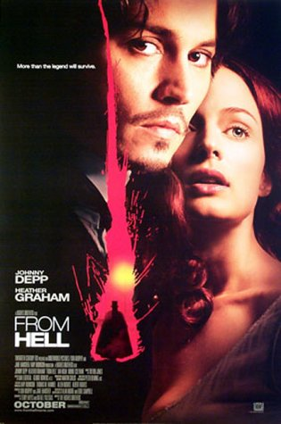

|  |
|
Joe Barlow and Cynthia Fuchs take
opposing points of view on the Hughes' brothers latest film - From Hell.
- The seamless melding of plot, mood and
macabre visuals set From Hell far above
other murder-mystery films - Joe Barlow.
- From Hell
is, ultimately, an unsatisfying film, but it has much to say about the
interrelationship between social, political and media structures during
the nineteenth century - Cynthia Fuchs
|